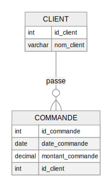

La normalisation est un processus visant à organiser les données dans une base de données pour minimiser la redondance et éviter les anomalies de mise à jour. Elle implique de décomposer les tables en sous-tables plus petites et de définir des relations entre elles.
Formes Normales :
Exemple de Normalisation :
Supposons une table non normalisée ClientsCommandes :
Pour normaliser, nous pouvons la diviser en deux tables : Clients et Commandes.
Parfois, pour des raisons de performance, il peut être utile de dénormaliser certaines parties de la base de données. La dénormalisation consiste à réintroduire une certaine redondance pour réduire le nombre de jointures nécessaires lors des requêtes complexes, améliorant ainsi les performances de lecture.
Les clés primaires sont des attributs ou un ensemble d’attributs qui identifient de manière unique chaque enregistrement d’une table. Les clés étrangères sont des attributs d’une table qui font référence à la clé primaire d’une autre table, établissant une relation entre les deux tables.
Exemple de Clé Primaire et Étrangère :
La modélisation physique consiste à traduire le modèle logique en un schéma de base de données réel en tenant compte des contraintes techniques et des performances. Elle implique la définition des types de données, des index, des contraintes et des partitions.